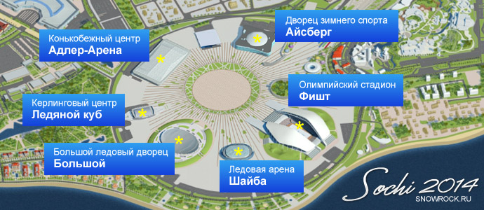

Данные Олимпийские объекты в Сочи, будут располагаться на двух кластерах - прибрежном и горном. Для удобства и экономии времени участников соревнований, было решено построить Олимпийские деревни поблизости от мест проведения самих соревнований. Таким образом, путь в прибрежном кластере от места проживания до места прохождения соревнований займет не больше 5 минут. В горном кластере с учетом географического расположения займет 15 минут.
Перемещение между прибрежным и горным кластером, будет занимать время приблизительное 30 минутам на расстоянии 48 км. Специально для этих целей, была построена новая железная дорога соединяющая эти два кластера.
На территории прибрежного кластера, было решено построить огромный по своим масштабам Олимпийский парк, который будет вмешать в себя приблизительно 70 000 человек и несколько ледовых арен. При проектировании и строительстве все было продуманно до мельчайших подробностей.
Расстояние между ледовыми аренами, сократили до самого минимума. Зимние Олимпийские игры в Сочи 2014, были первыми кто решился на это шаг. Так как Олимпийские игры, будут проходить наряду с Паралимпийскими играми все было спроектировано для комфорта участников и гостей с ограниченными возможностями.
Целью этого строительства, было объединение между собой объектов построенных на территории прибрежного кластера начиная с объектов спортивного направления заканчивая объектами социально-культурного назначения.Горный кластер Олимпийских игр находится в районе поселка Красная поляна. Для удобства спортсменов и гостей Олимпийских состязаний, был построен медиа центр и Олимпийская горная деревня. На данном кластере удалось расположить пять крупных объектов: горнолыжный центр «Роза хутор», комплекс для соревнований по лыжным гонкам и биатлону «Лаура», центр санного спорта «Санки», экстрим-парк «Роза Хутор» и комплекс для прыжков с трамплинов «Русские горки».
{kind=link}
{kind=link}
{kind=link}
{kind=link}
{kind=link}